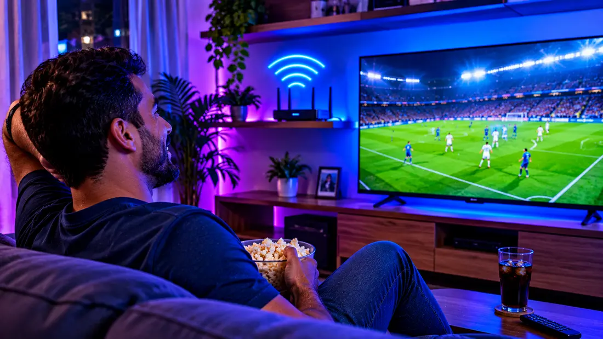

7 dicas para sua TV não travar no Wi-Fi

Nada mais chato do que a imagem travar bem na hora do gol ou do final do episódio. Na maioria das vezes, o problema não é o serviço, e sim o Wi-Fi dentro de casa. Veja 7 dicas que resolvem a maior parte dos casos.
1. Aproxime o roteador da TV
Paredes, espelhos, aquários e geladeiras enfraquecem o sinal. Quanto mais perto e com menos obstáculos, melhor.
2. Use a rede de 5 GHz
Se o seu roteador tem duas redes (2.4 GHz e 5 GHz), use a de 5 GHz quando a TV estiver no mesmo cômodo ou próxima. Ela é mais rápida e sofre menos interferência.
3. Prefira o cabo de rede
Se der para passar um cabo do roteador até a TV Box, faça isso. É a forma mais estável de conexão.
4. Reinicie o roteador de vez em quando
Desligar o roteador da tomada por 30 segundos uma vez por semana ajuda a "limpar" a conexão.
5. Desconecte quem não está usando
Celulares baixando atualizações e computadores ligados consomem internet sem você perceber.
6. Instale um repetidor ou rede mesh
Em casas grandes ou de dois andares, um repetidor de sinal ou sistema mesh leva o Wi-Fi forte até a TV.
7. Confira o plano de internet
Para Full HD, o ideal é ter pelo menos 15 Mega livres para a TV; para 4K, 25 Mega ou mais. Se a casa tem muitas pessoas conectadas, considere um plano maior.
Seguiu as dicas e ainda está com dúvida? Chame nossa equipe no WhatsApp: a gente te ajuda a configurar tudo.
Teste grátis hoje mesmo
Veja a qualidade na sua TV antes de assinar. Planos a partir de R$ 30,00, sem fidelidade.
💬 Quero meu teste grátis